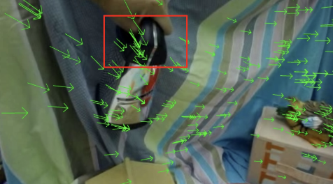
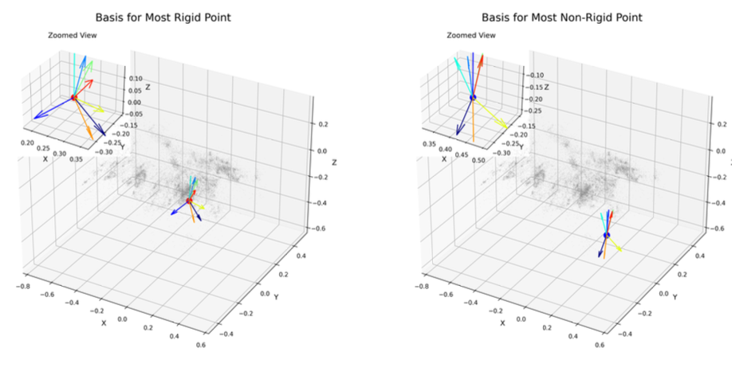
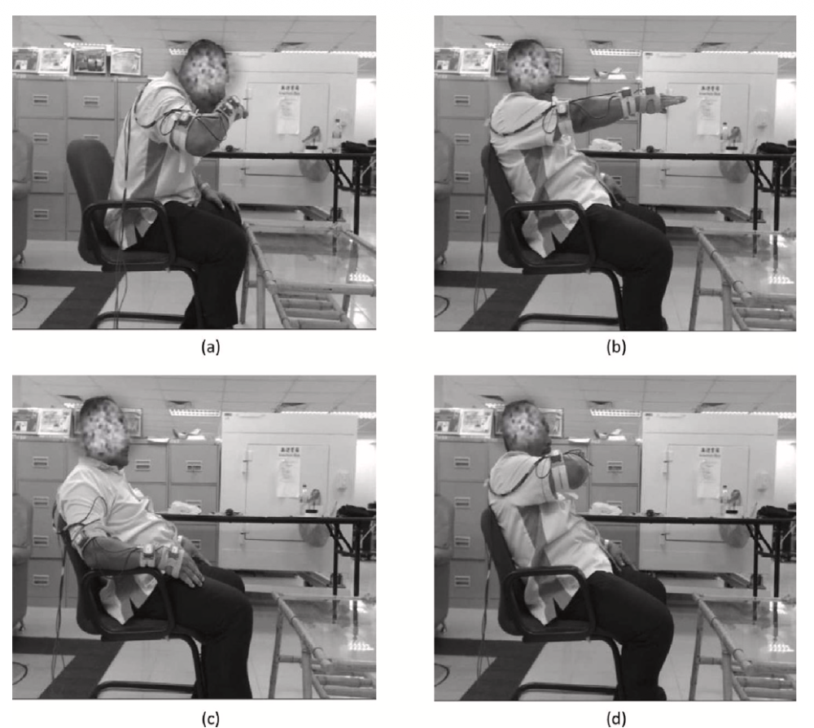
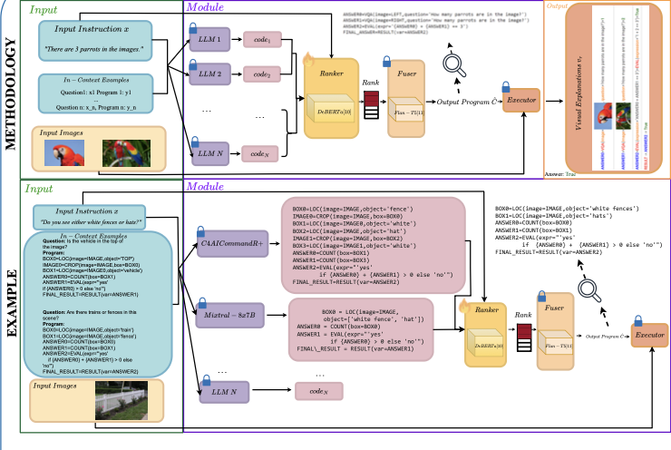

|
Tan Guan Yuan
I'm a Year 2 PhD candidate at Monash University, School of Information Technology. My research focuses on 4D reconstruction and Physics Simulation. I did my undergraduate studies at Monash University in Robotics Engineering.
Email /
LinkedIn /
Scholar /
Github
|
|
Research Aim
I am dedicated to bridging the gap between the digital and physical worlds. My work focuses on developing intelligent systems that can perceive the physical properties, functional purposes, and causal rules of our environment directly from visual data. Ultimately, I aim to build the foundational technology for creating Cognitive Digital Twins—interactive, reasoning simulations that will enable the next generation of robotics and intelligent systems.
|
|

|
Flow-Guided Deformation Networks for 4D Reconstruction
Guan Yuan Tan, et al.
Under Submission
A dual-deformation framework that combines local fine-grained detail modeling with global motion capture, guided by dense optical flow features, to achieve high-fidelity and temporally coherent 4D reconstruction. The method warps 3D Gaussians dynamically through space and time while maintaining smooth temporal consistency.
|
|

|
Learning a Spatially-Varying Motion Basis for 4D Reconstruction
Guan Yuan Tan, et al.
Under Submission
A spatially-factorized motion field framework that disentangles geometry and motion by decomposing complex non-rigid deformations into local motion primitives over a dynamic canonical space. Achieves state-of-the-art reconstruction fidelity with efficient training (<18 minutes) and real-time rendering (>103 FPS).
|
|

|
Parkinson's disease tremor prediction towards real-time suppression: A self-attention deep temporal convolutional network approach
Guan Yuan Tan,
A.S.M. Bakibillah,
Ping Yi Chan,
Chee Pin Tan,
Surya Nurzaman
Computers in Biology and Medicine, Volume 188, April 2025
paper
A self-attention deep temporal convolutional network (SADTCN) that captures both short- and long-term dependencies in nonlinear, stochastic Parkinson's disease tremor signals for accurate multi-step ahead prediction. The model achieves statistically significant improvements over baseline deep learning models and enables real-time active tremor control with high accuracy, robustness, and generalizability.
|
|

|
Herald: Democratizing Compositional Reasoning for Visual Tasks without Any Training
Guan-Yuan Tan,
Arghya Pal,
Sailaja Rajanala,
Raphaël C.-W. Phan,
Chee-Ming Ting
APSIPA ASC 2025
code
A framework that enables a coalition of freely-accessible LLMs to collaboratively generate executable Python programs for heterogeneous vision tasks, achieving state-of-the-art accuracy on medical and non-medical benchmarks. Herald employs chain-of-thought prompting, rank-and-fuse assembly, and transparent program execution—offering an open, resource-efficient alternative to premium LLM services without any training.
|
|
{kind=link}